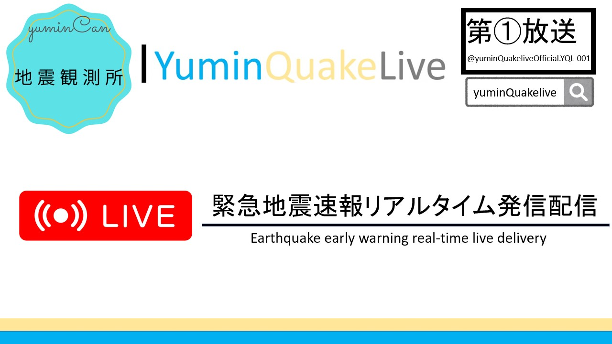

yuminNetworks 24時間日本全国地震監視・観測配信中
SNS



yuminNetworksとは
yuminNetworksとは、yumin地震観測所（yuminQuakelive）が運営する
全日本緊急地震速報監視・観測配信（通称：地震ライブ）を運営しているチーム名であり、
日本中の地震情報を24時間365日の間（一部を除き）YouTubeで配信を行っています。
また、災害などが発生した場合も臨時配信を行い、一人でも多くの方へ情報を発信し減災活動を行っています。
なお、障害情報やメンテナンス情報はyuminNetworks公式サポートTwitterアカウントなどで告知しております。
配信についての報告
配信機器やシステム、ネットワークの環境の不具合やトラブル、停電により配信が自動停止した際は下記のDiscordサーバーの#問題報告チャンネルにてご連絡下さい。
お問い合わせ
お問い合わせは下記のメールアドレスまたはお問い合わせフォームにお願いします。
メールアドレス：Contact@mail.yuminQuakelive.net